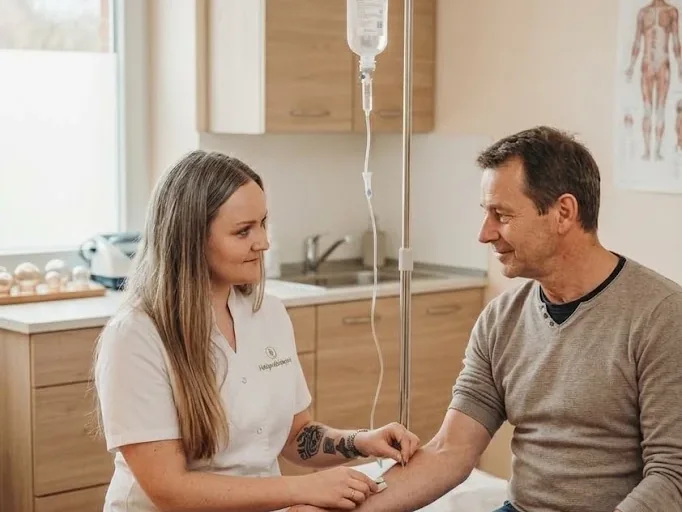
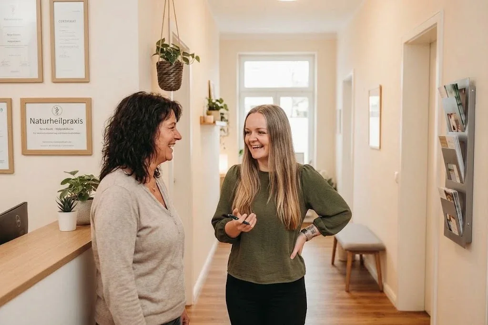
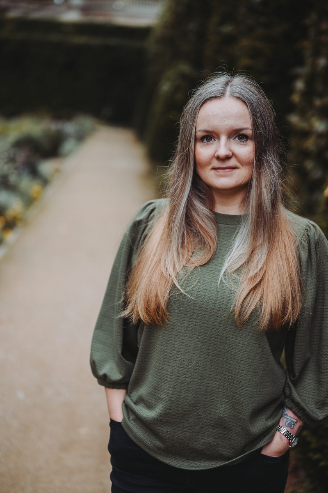

Heilpraktikerin / Berlin-Lichtenrade
Chelattherapie in Berlin: Schwermetalle erkennen und gezielt ausleiten.
Erst die Diagnostik, dann die Entscheidung: Anhand von Anamnese und Laborbefunden prüfe ich, ob eine Belastung durch Metalle vorliegt, und plane eine EDTA-Ausleitung nur dort, wo sie für Sie sinnvoll ist.
Metalle, die im Rahmen der Diagnostik betrachtet werden.
Steckbrief
Chelattherapie auf einen Blick
Die wichtigsten Fakten, kurz und nachvollziehbar zusammengefasst.
- Verfahren
- Infusion mit einem Chelatbildner (EDTA), der bestimmte Metallionen bindet und ihre Ausscheidung über die Nieren ermöglicht.
- Geeignet bei
- Verdacht auf oder nachgewiesener Belastung durch Metalle wie Blei, Cadmium, Quecksilber, Arsen oder Aluminium.
- Diagnostik
- Anamnese, Blut- und/oder Urinuntersuchung, Nierenwerte, Mineralstoffstatus.
- Ablauf
- Erstanamnese Labor Befund & Therapieplan begleitete Infusionen.
- Erstgespräch
- Kostenloses, unverbindliches Telefonat (10 Min.) zum Kennenlernen.
- Ort
- Heilpraxis Nina Klimek, Steinstraße 41D, 12307 Berlin-Lichtenrade
Wirkprinzip
Was ist eine Chelattherapie?
Der Begriff stammt vom griechischen chele, die Schere. Der Wirkstoff umschließt ein Metallion wie eine Zange.
Infusion
EDTA wird langsam über eine Vene am Arm verabreicht.
Bindung
Der Chelatbildner bindet bestimmte Metallionen zu einem stabilen Komplex.
Filterung
Der wasserlösliche Komplex gelangt über das Blut zu den Nieren.
Ausscheidung
Das gebundene Metall wird mit dem Urin ausgeschieden.

Keine allgemeine „Detox-Kur“, sondern eine gezielte therapeutische Maßnahme zur Ausleitung bestimmter Metalle.
Die Chelattherapie, oft auch Schwermetallausleitung genannt, nutzt Chelatbildner, die bestimmte Metalle binden. In der Medizin werden sie seit Jahrzehnten eingesetzt, etwa bei akuten Bleivergiftungen. In meiner Praxis verwende ich vor allem EDTA (Ethylendiamintetraessigsäure).
Welcher Chelatbildner infrage kommt und ob eine Ausleitung überhaupt sinnvoll ist, richtet sich nach den nachgewiesenen Metallen, Ihren Laborbefunden und Ihren individuellen Voraussetzungen. Die Infusion steht daher nie am Anfang, sondern am Ende einer sorgfältigen Diagnostik.
Belastungsquellen
Welche Metalle können eine Rolle spielen?
Auch wer bewusst lebt, kann den Kontakt mit Umweltbelastungen nicht vollständig vermeiden. Wie gut der Körper aufgenommene Stoffe ausscheidet, ist individuell verschieden. Ein Schwermetalltest in Berlin beginnt bei mir deshalb nicht im Labor, sondern mit der Frage, woher eine Belastung stammen könnte.
| Symbol | Metall | Mögliche Quellen im Alltag |
|---|---|---|
| Hg | Quecksilber | Alte Amalgamfüllungen, bestimmte Raubfische wie Thunfisch oder Schwertfisch |
| Pb | Blei | Alte Wasserleitungen in Altbauten, Altanstriche, Schießsport, berufliche Exposition |
| Cd | Cadmium | Tabakrauch, bestimmte Lebensmittel und Düngemittel, industrielle Belastungen |
| As | Arsen | Reis und Reisprodukte, regional belastetes Trinkwasser |
| Al | Aluminium | Kochgeschirr und Folie bei säurehaltigen Speisen, Kosmetika, Zusatzstoffe |
Weitere mögliche Quellen: Feinstaub, Verpackungen, Tätowierfarben und belastete Materialien. Welche davon in Ihrem Fall relevant sein könnten, klären wir in der Anamnese. Je nach Exposition werden weitere Metalle betrachtet.
Behandlungsweg
So läuft die Chelattherapie ab
Gründlich eingeordnet, individuell geplant, kontrolliert begleitet. Anamnese, Blutentnahme und Infusionen finden direkt in der Praxis in Lichtenrade statt.

Erstanamnese
Vorgeschichte, mögliche Belastungsquellen, Beschwerden, Vorerkrankungen und vorhandene Befunde.
Schwermetalltest
Gezielte Untersuchung je nach Metall und Fragestellung, plus Nierenwerte und Mineralstoffstatus.
Befund & Plan
Gemeinsame Einordnung. Ist eine Chelattherapie angezeigt, folgt ein individueller Plan zu Dosierung, Abständen und Anzahl.
Begleitete Ausleitung
EDTA-Infusionen in ruhiger Atmosphäre, Laborkontrollen, Mineralstoffausgleich und Anpassung an den Verlauf.
Sicherheit
Mehr als nur die Infusion
Eine gute Ausleitung endet nicht beim Chelatbildner. Diese Punkte behalte ich während der gesamten Therapie im Blick.
Nierenfunktion
Kontrolle vor Beginn und begleitend, denn die gebundenen Metalle werden über die Nieren ausgeschieden.
Mineralstoffe
EDTA kann auch Zink, Magnesium oder Calcium binden. Der Mineralstoffstatus wird gezielt ausgeglichen.
Flüssigkeit & Darm
Flüssigkeitshaushalt und Darmfunktion werden mitberücksichtigt, um die Ausscheidung zu unterstützen.
Eignung vorab geprüft
Nicht geeignet u. a. bei eingeschränkter Nierenfunktion, in Schwangerschaft und Stillzeit oder bei bestimmten Vorerkrankungen.
Quellen reduzieren
Gemeinsam identifizieren wir vermeidbare Belastungsquellen im Alltag.
Verlauf statt Schema
Dosierung, Abstände und Anzahl der Infusionen richten sich nach Befund und Verlauf.
Kostenloses Erstgespräch
Klarheit beginnt mit einem Anruf.
Sie vermuten eine Belastung durch Metalle oder möchten wissen, ob eine Abklärung für Sie sinnvoll ist? In zehn Minuten am Telefon klären wir Ihre ersten Fragen, kostenlos und unverbindlich.
- Einschätzung Ihrer Situation und möglicher Belastungsquellen
- Welche Diagnostik in Ihrem Fall sinnvoll sein kann
- Ob meine Arbeitsweise zu Ihnen passt


Ihre Heilpraktikerin
Nina Klimek
„Ich verspreche keine schnellen Lösungen. Sie können von mir aber eine persönliche, strukturierte und ehrliche Begleitung erwarten.“
Heilpraktikerin in Berlin-Lichtenrade mit Schwerpunkten in Infusions- und Chelattherapie, Darmgesundheit und klinischer Psycho-Neuro-Immunologie (kPNI). Ich nehme mir Zeit, Befunde gründlich einzuordnen, und erkläre die Überlegungen hinter jedem Schritt.
- Erlaubnis nach § 1 HeilprG (2024)
- Mitglied Freie Heilpraktiker e.V.
- Masterstudium kPNI Universität Córdoba (2025 bis 2027)
- Infusionstherapie Rezepturen I & II
- Orthomolekulare Medizin
- Mikronährstoffberaterin
FAQ
Häufige Fragen zur Chelattherapie
Ihre Frage ist nicht dabei? Im kostenlosen Kennenlern-Telefonat nehme ich mir Zeit dafür.
Was ist eine Chelattherapie?
Bei der Chelattherapie werden sogenannte Chelatbildner, in meiner Praxis vor allem EDTA (Ethylendiamintetraessigsäure), als Infusion verabreicht. Sie binden bestimmte Metallionen zu stabilen, wasserlöslichen Komplexen, die anschließend über die Nieren mit dem Urin ausgeschieden werden können. Der Name leitet sich vom griechischen „chele“ (Schere) ab, weil der Wirkstoff das Metall wie eine Zange umschließt.
Wie wird eine Schwermetallbelastung festgestellt?
Am Anfang steht eine ausführliche Anamnese zu Vorgeschichte, Beschwerden und möglichen Belastungsquellen. Danach wird je nach Metall und Fragestellung eine gezielte Labordiagnostik aus Blut und/oder Urin veranlasst. Zusätzlich werden Nierenwerte und der Mineralstoffstatus geprüft, bevor über eine Ausleitung entschieden wird.
Was ist ein Schwermetalltest und wo kann ich ihn in Berlin machen lassen?
Ein Schwermetalltest ist eine Laboruntersuchung von Blut und/oder Urin, mit der sich die Belastung durch bestimmte Metalle einschätzen lässt. Welche Werte sinnvoll sind, hängt von Ihrer Vorgeschichte und möglichen Belastungsquellen ab. In meiner Praxis in Berlin-Lichtenrade plane ich den Test nach der Erstanamnese gezielt, die Blutentnahme erfolgt direkt vor Ort.
Welche Metalle können eine Rolle spielen?
Im Rahmen der Diagnostik betrachte ich unter anderem Quecksilber, Blei, Cadmium, Arsen und Aluminium sowie, je nach individueller Exposition, weitere relevante Metalle. Mögliche Quellen sind z. B. Feinstaub, bestimmte Lebensmittel, alte Amalgamfüllungen, Tätowierfarben, berufliche Belastungen oder alte Bleileitungen in Altbauten.
Wie läuft eine EDTA-Infusion ab und wie lange dauert sie?
Sie sitzen bequem in einem ruhigen Behandlungsraum, die Infusion läuft langsam über eine Vene am Arm. Die Dauer hängt von Präparat und Dosierung ab und liegt in der Regel zwischen etwa einer und drei Stunden. Vorab werden die relevanten Laborwerte kontrolliert.
Wie viele Infusionen sind notwendig?
Das lässt sich nicht pauschal beantworten. Dosierung, Abstände und Anzahl der Infusionen richten sich nach den Laborbefunden, Ihrer Ausgangssituation und dem Verlauf. Kontrolluntersuchungen zeigen, ob und wie die Therapie angepasst wird.
Wie bereite ich mich auf eine Infusion vor?
Kommen Sie möglichst ausgeruht, trinken Sie im Vorfeld ausreichend und essen Sie vorher eine leichte Mahlzeit. Bringen Sie aktuelle Befunde sowie eine Liste Ihrer Medikamente und Nahrungsergänzungsmittel mit. Individuelle Hinweise erhalten Sie mit Ihrem Therapieplan.
Kann ich nach der Infusion arbeiten oder Auto fahren?
Viele Menschen gehen danach ihrem Alltag wie gewohnt nach. Da sich manche nach einer Infusion etwas müde fühlen, empfehle ich, sich für den Rest des Tages nichts Anstrengendes vorzunehmen. Ob Sie direkt danach selbst fahren sollten, besprechen wir nach der ersten Anwendung.
Welche Nebenwirkungen sind möglich?
Möglich sind unter anderem Müdigkeit, Kopfschmerzen, Reizungen an der Einstichstelle sowie ein Verlust wichtiger Mineralstoffe wie Zink oder Magnesium, da EDTA auch diese binden kann. Weil die gebundenen Metalle über die Nieren ausgeschieden werden, kontrolliere ich die Nierenfunktion vor und während der Therapie und gleiche Mineralstoffe gezielt aus.
Für wen ist eine Chelattherapie nicht geeignet?
Nicht infrage kommt sie in der Regel bei eingeschränkter Nierenfunktion sowie in Schwangerschaft und Stillzeit. Auch bestimmte Vorerkrankungen und Medikamente sprechen dagegen. Ob eine Chelattherapie für Sie sinnvoll und vertretbar ist, klären wir vorab in der Anamnese und anhand Ihrer Laborwerte.
Was kostet eine Chelattherapie und zahlt die Krankenkasse?
Die Erstanamnese beginnt ab 150 € (kompakt, 60 Minuten). Die weiteren Kosten für Labor und Infusionen hängen von der notwendigen Diagnostik und Ihrem individuellen Therapieplan ab und werden vorab transparent mit Ihnen besprochen. Es handelt sich um Selbstzahlerleistungen; private Krankenversicherungen, Zusatzversicherungen oder die Beihilfe erstatten je nach Tarif ganz oder teilweise. Gesetzliche Krankenkassen übernehmen Heilpraktikerleistungen in der Regel nicht. Erste Fragen dazu klären wir gern im kostenlosen Telefonat.
Ist die Chelattherapie eine Detox-Kur?
Nein. Die Chelattherapie ist keine allgemeine Entgiftungskur, sondern eine gezielte therapeutische Maßnahme zur Ausleitung bestimmter Metalle. Sie steht erst am Ende einer sorgfältigen Diagnostik, nicht am Anfang.
Wo in Berlin findet die Behandlung statt?
In der Heilpraxis Nina Klimek, Steinstraße 41D, 12307 Berlin-Lichtenrade im Süden Berlins, gut erreichbar aus Tempelhof, Mariendorf, Marienfelde sowie aus dem angrenzenden Brandenburg (Mahlow, Blankenfelde, Teltow). Termine können online über Doctolib gebucht werden; die Erstanamnese ist auch online möglich.
Termin & Kontakt
Schwermetallbelastung abklären lassen
Buchen Sie eine Erstanamnese: Wir schauen uns Ihre Situation an, planen die passende Diagnostik und besprechen die nächsten Schritte.
Steinstraße 41D
12307 Berlin-Lichtenrade
Route planen (öffnet in neuem Tab)